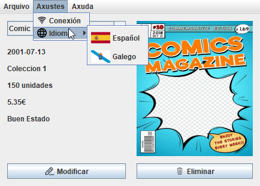
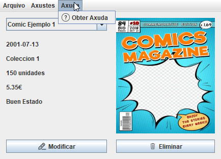

BARRA DE MENU
ARCHIVO

Aqui podremos encontrar tres opciones:
- BUSCAR CÓMIC: Esta opcion abre un menú para buscar entre todos los cómics uno cuyo titulo coincida con el buscado
- NUEVO CÓMIC: Esta opcion abre un menú para crear un nuevo cómic a la base de datos
- SALIR: Esta opción sencillamente cierra la aplicación
AJUSTES
Aqui podremos encontrar dos opciones:
- CONEXIÓN: Esto abre el menú de con la base de datos
- IDIOMA: En este desplegable estan los idiomas de los que dispone la aplicación
AYUDA
Aqui podremos encontrar únicamente una opcion para abrir la ayuda de la aplicación